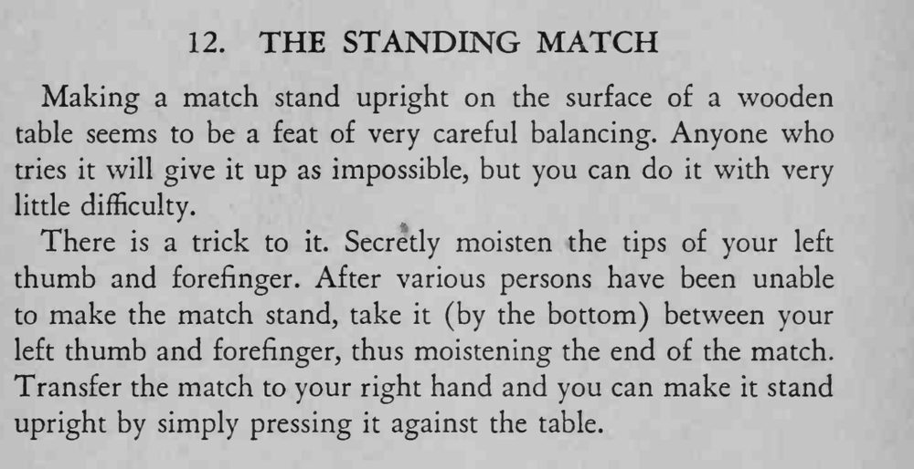

一根火柴竟能直立在木桌面上，别人怎么试都立不住。
湿气只要一点点，太湿火柴会打滑立不住。

Making a match stand upright on the surface of a wooden table seems to be a feat of very careful balancing. Anyone who tries it will give it up as impossible, but you can do it with very little difficulty. There is a trick to it. Secretly moisten the tips of your left thumb and forefinger. After various persons have been unable to make the match stand, take it (by the bottom) between your left thumb and forefinger, thus moistening the end of the match. Transfer the match to your right hand and you can make it stand upright by simply pressing it against the table.